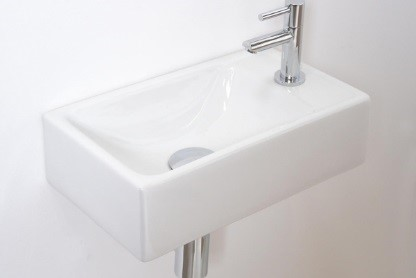

Laat je inspireren door de vele badkamers in onze 400 m2 grote showroom in Apeldoorn. Ontdek verschillende badkamerstijlen, zoals landelijk, modern of klassiek. Over de montage van de badkamer hoef je je niet druk te maken: wij werken met ervaren installateurs die de badkamer vakkundig installeren. Daardoor geniet je zorgeloos van je nieuwe badkamer.
Wij adviseren je niet alleen over de uitstraling en functionaliteit van de badkamer, maar ondersteunen ook bij vragen over leidingen, ventilatie en elektriciteit. Je vindt bij Balotti Sanitair & Tegels altijd een geschikte badkamer die bij je budget en wensen past. Daarnaast kun je onze badkamers ook in onze showroom in Itterbeck (Duitsland) bekijken.
Bij het eerste gesprek bespreken we je wensen en laten we je zien wat er met jouw budget mogelijk is. De prijs van badkamers in Apeldoorn is van veel factoren afhankelijk, zoals de grootte van tegels en het type badkamermeubel. Hierdoor zijn we pas na het kiezen van de materialen en badkamermeubels in staat om een eerste prijsindicatie van de complete badkamer te geven. Bekijk hieronder de geschatte prijzen per product:
Badkamer onderdelen Ligbad Complete douche Toiletopstelling Wastafel en kraan Badkamermeubel
Prijs badkamermeubel € 250,- tot € 1.200,- € 750,- tot € 1.800,- € 900,- tot € 2.200,- € 125,- tot € 1.000,- € 500,- tot € 1.800,-
Bekijk badkamers in onze showroom in Apeldoorn Bel 055 3125862
In een oriënterend gesprek bespreken we je wensen en eisen met betrekking tot het design, comfort en budget. In onze showroom in Apeldoorn kun je het complete assortiment badkamers en sanitair bekijken, waardoor je genoeg inspiratie vindt om jouw perfecte badkamer samen te stellen. We werken het ontwerp indien gewenst voor je uit in een tekening of 3D-ontwerp. Zo laten we je zien hoe de badkamer er in jouw woning uit gaat zien. Daarna ontvang je de eerste vrijblijvende offerte. Nadat je de offerte hebt ontvangen, nodigen wij je uit om de badkamer door te spreken. Ben je helemaal tevreden? Dan gaan wij voor je aan de slag om de levering voor te bereiden.
Bij Balotti in Apeldoorn kun je complete badkamers samenstellen: van vloertegel tot kraan en van douchekop tot spiegel. De materialen, het sanitair en de kastjes komen ook terug in het 3D-ontwerp, waardoor je een levensecht beeld krijgt van de uitstraling van de nieuwe badkamer. Je ziet direct hoe de materialen op elkaar aansluiten en hoeveel loopruimte er in de badkamer overblijft. Daarnaast is het 3D-ontwerp gratis als u de badkamer bij ons afneemt. In sommige gevallen is er geen 3D-model beschikbaar van het specifieke badkamermeubel. In dat geval plaatsen we een soortgelijk badmeubel in het 3D-ontwerp.
Voor het monteren en installeren van badkamers werken we met gerenommeerde installatiebedrijven die de badkamer vakkundig installeren. Indien gewenst helpen ze je ook met het leggen van de tegelvloer of met het uitvoeren van sloopwerkzaamheden. Daarnaast is het natuurlijk ook mogelijk om de badkamer zelf te installeren of een eigen installateur in te schakelen.
Onze installateurs starten de installatie van de badkamer in veel gevallen op maandag. Daarom leveren wij het sanitair op vrijdag, zodat alle badkameronderdelen op tijd op locatie zijn. Hierdoor kunnen de installateurs direct aan de slag. Een groot voordeel hierbij is dat de badkamer in zeer korte tijd gemonteerd is.
Bekijk de laatste trends op het gebied van badkamers in onze showroom in Apeldoorn. Je vindt er badkamers van vooraanstaande merken:
Bekijk ons assortiment online of bezoek onze showroom in Apeldoorn. We gaan graag met je in gesprek om jouw wensen te bespreken. Daarnaast kun je direct ideeën opdoen in onze 400 m2 grote showroom, waar diverse badkameropstellingen te bekijken zijn.
Neem voor meer informatie over onze badkamers in Apeldoorn contact op via 055 3125862 of stuur een mail naar apeldoorn@balotti.com.